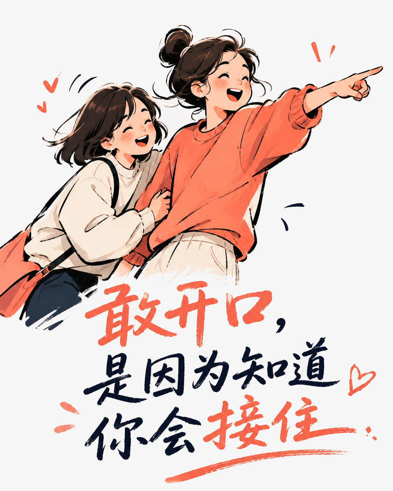
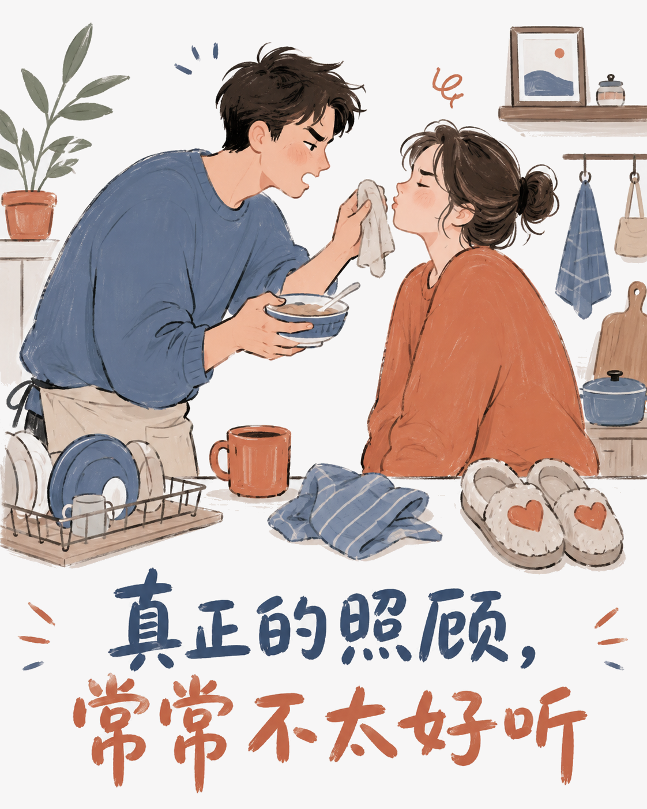
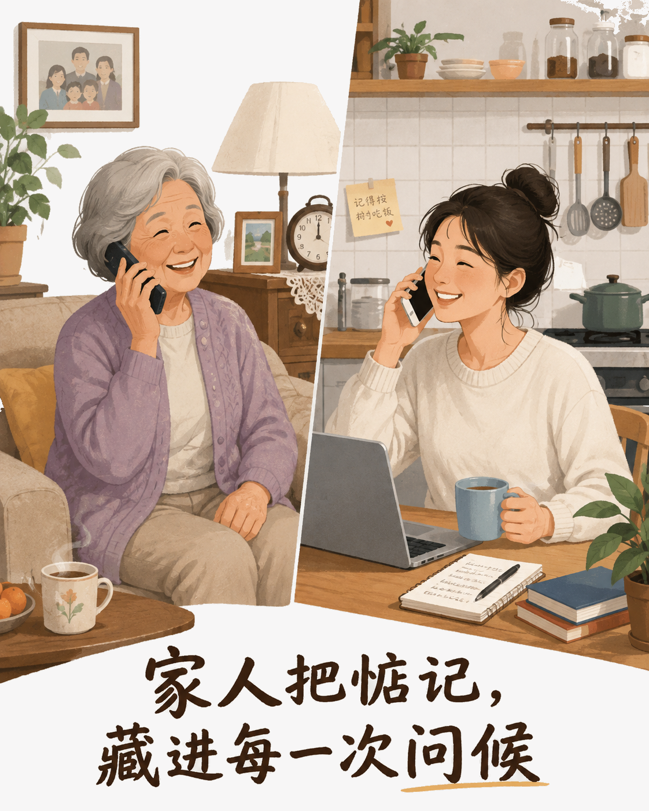

关系的分量，不在客气里
真正让人安心的关系，不是彼此从不添麻烦，而是你开口时，对方愿意接住；对方需要时，你也不会躲开。那些看似不够客气的时刻，往往正是信任落地的地方。
先允许彼此开口
朋友之间可以临时托付一只猫、一次搬家，甚至一段手头紧的日子。嘴上会嫌你“又来了”，行动却已经开始安排。帮忙不是谁占了便宜，而是今天我欠你一个小忙，明天你也有机会把这份心意递回来。

照顾常常穿着玩笑外套
亲密的人未必句句温柔：一句“自己想办法”，后面可能跟着一碗热饭；一句“你怎么这么麻烦”，手却还在收拾残局。生活里的分工很少需要郑重道谢，愿意把小事做完，本身就是在说：我把你放在心上。

家人不擅长表达，却一直在场
家人的关心常常没有漂亮台词，可能只是反复问一句“到家了吗”，替你留一碗饭，或把一笔钱算成“先拿去用”。他们把牵挂藏进重复的日常，也把账本上的数字，慢慢换成一起走过的年月。

所以，别把亲近误解成打扰，也别把接受帮助看成亏欠。能自然求助，也愿意及时回应，关系才会有来有往，越过越稳。